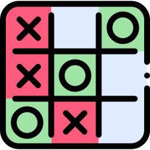

Aprenda de uma vez por todas e deixe os outros comendo poeira!
Desenhe o tabuleiro
Para começar, desenhe um tabuleiro com 3 x 3 casas. Como a seguir:
Peça para o seu adversário jogar primeiro
O mais comum é o primeiro jogador usar "X", mas você pode deixar a pessoa escolher entre "X" e "O". Cada um tem que tentar formar uma fila com o seu respectivo símbolo nas casas do tabuleiro. Se você jogar primeiro, desenhe o seu símbolo na casa do meio para otimizar as suas chances de vencer — já que vai ter mais chances (quatro) de criar uma fila de três "X" ou "O".
X
Faça a sua jogada (ou peça para o seu adversário jogar)
Depois do primeiro passo, o adversário desenha o seu respectivo símbolo, que deve ser diferente do anterior. Ele pode tentar evitar que o oponente feche uma fila no tabuleiro ou se concentrar na sua própria estratégia. O ideal é fazer os dois ao mesmo tempo.
O
X
Alterne jogadas com o seu adversário até um de vocês vencer (ou dar em empate)
Vence a primeira pessoa que desenhar três símbolos em:
Fila;
Horizontal;
Vertical;
Diagonal.
Contudo, se os dois jogadores forem habilidosos, as chances de haver um empate são muito maiores.